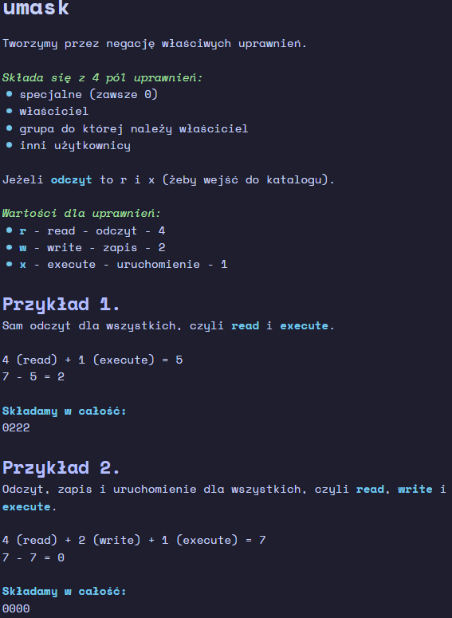

W oknie Network Settings przechodzimy do zakładki Routing i w sekcji Routing Table dodajemy trase.Wpisujemy adres IP bramy domyślnej i nazwa urządzenia, czyli karty sieciowejPo dodaniu trasy widzimy ją w tabeli
2.1.2 Zmiana nazwy serwera
W oknie Network Settings przechodzimy do Hostname/DNS i wpisujemy statyczną nazwę hosta
2.1.3 Wyłączenie interfejsu
Przejdź do edycji ustawień interfejsu, następnie do zakładki General i w sekcji Device Activation zmień opcję Activate Device na Never
2.2 Serwer HTTP
ï ” Nazwa usÅ‚ugi: apache2
 Nazwa pakietu: yast2-http-server
 Domyślny właściciel: wwwrun
 Grupa właściciela: www
ﴘ Domyślny numer portu: 80 (TCP)
 Katalog do plików konfiguracyjnych: /etc/apache2
 Użytkownik anonimowy - każdy kto chce skorzystać z serwera nie mając przy tym swojego konta. Zazwyczaj można się połączyć anonimowo korzystając z login’u: anonymous lub wybierając odpowiednie ustawienie/przełącznik.
 Użytkownik uwierzytelniony - posiada własne konto w naszym serwerze.
2.3.2.2 Umask

2.3.2.3 Łączenie się / testowanie serwera FTP
Program PuTTY - umożliwia połączenie się z innym hostem (za pomocą protokołów telnet, ssh, ftp itp.). W przypadku FTP będziemy korzystać z narzędzia psftp (które wchodzi w skład PuTTY). Aby pobrać PuTTYkliknij tutaj
Sposoby na połączenie się z serwerem FTP: - Przeglądarka Internet Explorer - Narzędzia ftp w wierszu poleceń - Eksplorator plików - Filezilla lub PuTTY
2.3.3 Konfiguracja serwera
Przejdź do konfiguarcji serwera.W zakładce Start-up zmień ustawienia uruchamiania serwera.W zakładce General ustaw wiadomość powitalną, zmień uprawnienia umask dla użytkowników anonimowych i uwierzytelnionych oraz podaj ścieżkę do katalogów.W zależności od zadania zmień ustawienia kto może używać serwera i czy anonimowi mogą przesyłać. W tym przypadku nic nie zmieniam.Ustaw opcję write_enable na true w pliku /etc/vsftpd.conf (tę konkretną opcję znajdziesz na 19 linii)Zrestartuj serwer FTP.Zmień właściciela do katalogu serwera i jego plików (tym którego ścieżkę podaliśmy w poprzednim kroku), domyślnie będzie to /srv/ftp. Skorzystaj z przełącznika -R.Ustaw odpowiednie uprawnienia zarówno dla katalogu jaki plików wewnątrz. W tym celu skorzystaj z przełącznika -R.Sprawdź działanie serwera na kliencie za pomocą polecenia ftpTo samo możesz zrobić w Eksploratorze PlikówLub w PuTTY - PSFTPPamiętaj, żeby sprawdzić też połączenie jako użytkownik anonimowy
Przed nauką konfiguracji serwera DNS warto nauczyć się teorii, zestaw fiszek programu Anki: kliknij tutaj.
Dla przypomnienia:
strefa wyszukiwania w przód - example.com -> 192.168.1.1
strefa wyszukiwania w tył - 192.168.1.1 -> example.com
rekord A to nazwa na IPv4 - example.com -> 192.168.1.1
rekord NS - identyfikuje serwer nazw
rekord CNAME - przechowuje alias, który pozwala na przypisaniu wielu rekordów do tego samego hosta.
Tworzenie nazwy strefy wyszukiwania w przód polega na odwróceniu adresu sieci i dodaniu in-addr.arpa na końcu. Na przykład:
Adres sieci: 10.0.0.0
Nazwa strefy: 0.0.10.in-addr.arpa
Do testowania użyj polecenia nslookup (na Linuxie i Windows’ie) lub dig (na Linux’ie).
2.4.2 Konfiguracja serwera
Przejdź do konfiguracji serwera DNSPodaj listę hostów do których przekazywane będą zapytania, w tym przypadku będzie to tylko lokalny serwerTworzymy nową strefę podstawową (Master) wyszukiwania w przódWybieramy EditDodajemy nowy rekord NS, który zawiera nazwę domeny z kropką na końcuDodajemy nowy rekord A na całą domenęDodajemy pozostałe rekordyZmieniamy ustawienia uruchamiania serwera i przechodzimy do zaawansowanej konfiguracjiPrzechodzimy do zakładki DNS Zones i dodajemy nową strefę, tym razem wyszukiwania w tyłW edytorze strefy zaznaczamy opcję Automatically Generate Records From i wybieramy strefę wyszukiwania w przód (w tym przypadku mamy tylko jedną, więc wybrała się od razu)Dodajemy rekord NS, w strefie wyszukiwania w tył tak samo jak w strefie wyszukiwania w przód
2.4.3 Testowanie serwera
Sprawdzam strefę wyszukiwania w przód na serwerzeNastępnie sprawdzam strefę wyszukiwania w tyłSprawdzam działanie serwera na kliencieI na koniec wyszukiwanie w tył
-r - kopiuje/wysyła wszystkie pliki wewnątrz danego katalogu.
Zamiast adresu serwera możemy też podać  _nazwę hosta.
Przykład 1.
scp admin@10.0.0.1:/etc/os-release wersja_systemu
Skopiuje to plik /etc/os-release z serwera do pliku wersja_systemu na kliencie.
Przykład 2.
scp test admin@10.0.0.1:test2
Wysyłamy plik test z klienta do pliku test2 na serwerze.
3.1.2 Połączenie przez sftp
Oprócz scp możemy połączyć się przez SFTP - Secure File Transfer Protocol (TCP 22). Wtedy obowiązują nas komendy tj. w zwykłym ftp, czyli get (pobieranie z serwera) lub put (wysyłanie do serwera).